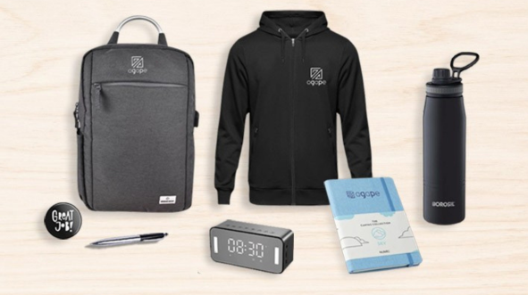

Employee Onboarding Kit Ideas: What to Include in a New Hire Welcome Kit
Published: August 28, 2026

The first day at a new job shapes how an employee feels about your company for months. A well-designed employee onboarding kit — also called a new hire welcome kit — turns a routine joining process into a memorable experience. In this guide we share practical employee onboarding kit ideas and a complete welcome kit checklist you can use for any team size.
Unbox Paradise designs and delivers customized onboarding and welcome kits in bulk for companies in Pune, Bhopal and across India.
Why Onboarding Kits Matter
A welcome kit reduces first-day anxiety, signals that your company is organized and thoughtful, and gives new hires branded items they will use every day. It also strengthens employer branding — every time an employee uses a branded bottle or notebook, your company gets noticed.
New Hire Welcome Kit Checklist
A great onboarding kit usually combines practical essentials, branded merchandise and a personal touch. Use these categories as a checklist:
- Welcome essentials: welcome letter, company overview, first-week schedule.
- Stationery: branded diary, notebook and pen.
- Drinkware: a custom bottle, mug or tumbler.
- Apparel: a branded t-shirt, polo or hoodie.
- Bag: a laptop backpack or tote.
- Tech: a notebook, mouse pad or power bank.
- Personal touch: a handwritten note or a small treat.
15 Employee Onboarding Kit Ideas
1. Branded Welcome Notebook & Pen Set
A premium diary and pen are used from day one and keep your logo on every desk.
2. Company T-Shirt or Polo
Apparel creates an instant sense of belonging and works well for team photos and events.
3. Custom Water Bottle
A practical, eco-friendly gift that employees use daily.
4. Laptop Backpack or Laptop Sleeve
For hybrid teams, a branded bag is one of the most valued onboarding gifts.
5. Desk Organizer & Accessories
Sticky notes, highlighters, a pen stand and a desk mat set up the workspace beautifully.
6. Welcome Letter from Leadership
A personal note from the CEO or manager adds warmth and sets the tone.
7. Company Swag Pack
Combine stickers, badges, a keychain and a cap for a fun, branded swag kit.
8. Tech Accessories
A wireless mouse pad, cable organizer or power bank is a thoughtful, useful gift.
9. Snacks & Treats
A small gourmet box makes the unboxing experience enjoyable.
10. Wellness Item
A stress ball, aromatherapy candle or fitness accessory shows you care about wellbeing.
11. Company Culture Booklet
Explain your values, mission and rituals in a designed mini booklet.
12. First-Week Checklist Card
A printed checklist of logins, meetings and training helps new hires settle in faster.
13. Branded Tote Bag
An eco-friendly tote doubles as packaging and a useful everyday item.
14. Personalized Name Tag or Badge
A small personalized item makes the kit feel tailored to the individual.
15. Welcome Hamper
Bundle everything into a premium box. Browse our bundled packs for ready-made options.
Onboarding Kit Ideas by Budget
Essential (budget-friendly): notebook, pen, bottle and stickers.
Standard: add a t-shirt, tote and snack box.
Premium: include a backpack, tech accessory and a personalized hamper with a leadership
welcome note.
Tips for a Great Onboarding Kit
- Keep it useful — avoid items employees will never use.
- Focus on quality over quantity.
- Add one personal touch (note, name tag or treat).
- Standardize the kit so every new hire gets the same experience.
- Plan in bulk to reduce per-unit cost and ensure consistency.
Build Your Onboarding Kits with Unbox Paradise
We help HR and admin teams design onboarding kits that reflect their brand. Explore our product catalog, see our gifting services, or request a bulk quote. For more detail, read our 2026 onboarding & welcome kit guide.